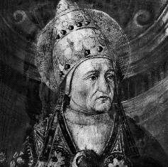

St. Felix
St. Felix I (269-274) sent a letter to the East explaining the doctrine of the Incarnation. The Apollinarians later interpolated this letter (and in 431 the altered text was presented to the Council of Ephesus).
McSorley, Joseph. An Outline History of the Church by Centuries (from St. Peter to Pius XII). 2nd Ed. 1944.